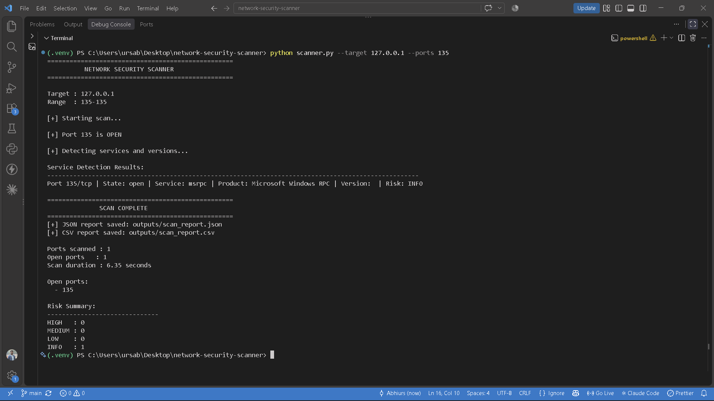
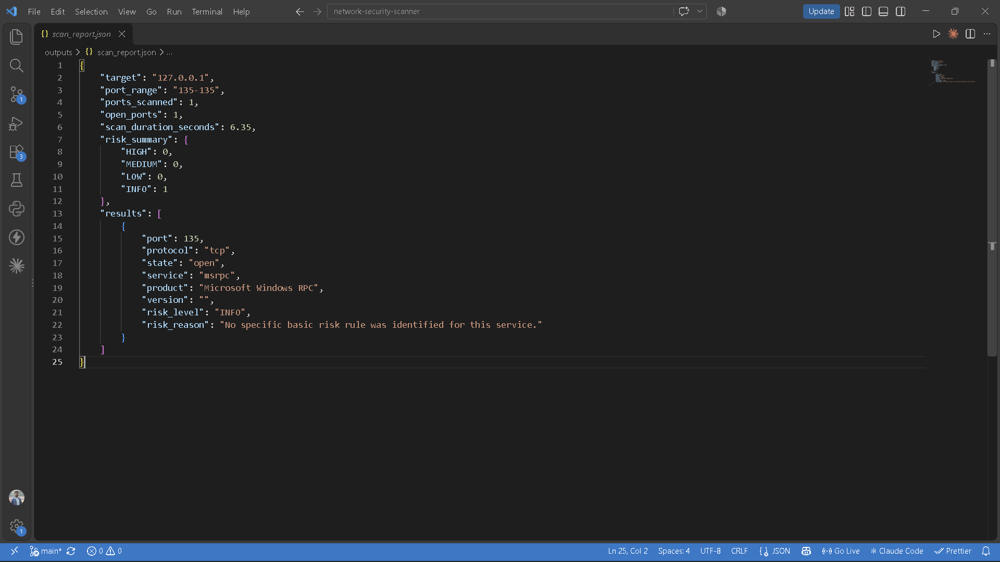
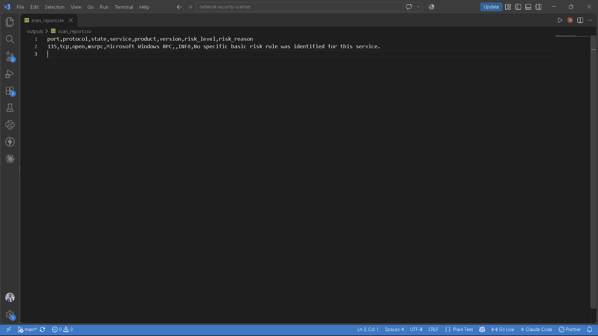

Network Security Scanner
Developed a Python-based network security scanner that
checks TCP ports, identifies services using Nmap, performs
rule-based risk analysis, and generates JSON and CSV reports.
Python
Socket Programming
TCP/IP
Nmap
JSON
CSV
Key Features
- TCP port scanning with concurrent execution.
- Service and version detection using Nmap.
- Rule-based security risk classification.
- Automated JSON and CSV report generation.
- Command-line input validation and error handling.
Project Screenshots



View on GitHub